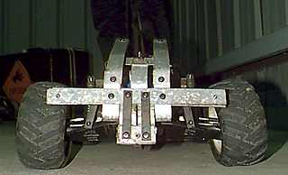

|  |
Waves is a graphical front-end for speech processing. Speech waveforms, spectrograms, pitch traces etc can be displayed, edited and processed in X windows. OGI Speech Tools (freeware) The OGI Speech Tools, a set of speech data manipulation tools developed by CSLU, are available via anonymous ftp. The tools can be used to compute and display signal representations, label speech at different levels (e. Real-time VISUAL displays for the voice and other freeware programs for the SGI workstation back to index Macintosh Signalyze Signalyze 3. |